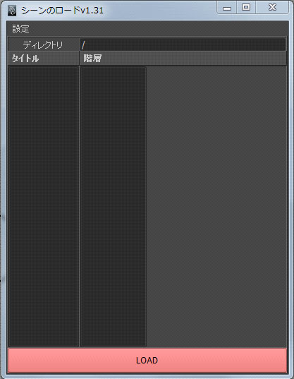
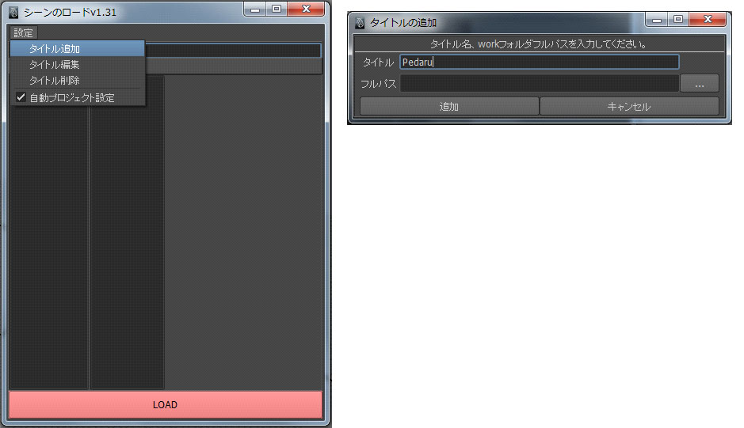
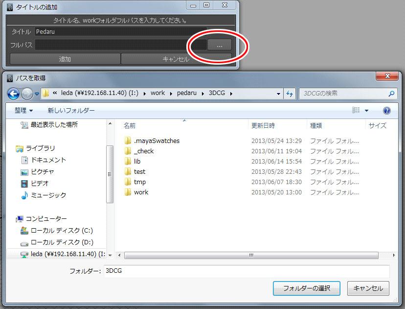
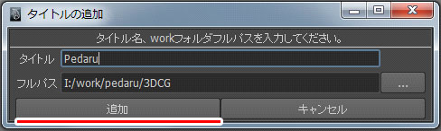
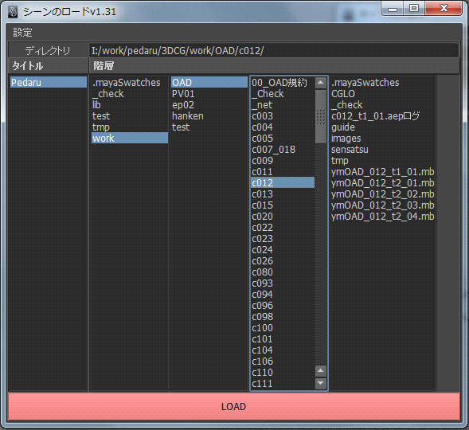

シーンをロードするためのツールです。
このツールを使用することでシーンの読み込みと同時に既存のworkspaceを使用して
プロジェクト設定を自動で行うことができます。

初期状態はタイトルに何も表示されていない状態になります。
【設定】から【タイトル追加】を実行し、ウインドウを表示してください。
表示された【タイトルの追加】ウインドウの【タイトル】テキストフィールドに任意の作品名を入力してください。(日本語でも可)

フルパス項目の横にある【...】ボタンをクリックし、【パスを取得】ダイアログを表示します。

【追加】ボタンをクリックします。

【シーンのロード】メインウインドウの【タイトル】リストに入力したタイトルが追加され、
【階層】リストにダイアログで選択したフォルダーより先のディレクトリが表示されます。
mbファイルまたはmaファイルを選択し、下の【LOAD】ボタンをクリックするとそのシーンファイルを開くことができます。
